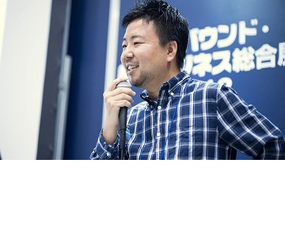
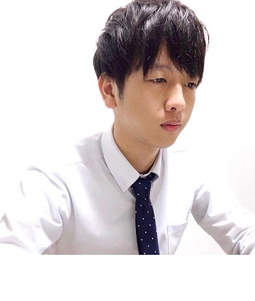

Lời chào từ BGĐ
Công ty Cổ phần The First One là doanh nghiệp BPO có vốn đầu tư nước ngoài (Nhật Bản) đầu tiên tại Việt Nam cung cấp các dịch vụ về lĩnh vực BPO và Testing. Mục tiêu phát triển là tận dụng thế mạnh về Marketing của Công ty mẹ CNC nhằm cung cấp các dịch vụ BPO đạt chất lượng quốc tế cho các Khách hàng tại thị trường Nhật Bản.
Co-Founder Yasuhiro Nakahama
“Cùng nỗ lực hướng đến một thời đại mới"
Sự phát triển của ngành công nghệ kỹ thuật với sự bùng nổ của cuộc Cách mạng CNTT đã nhanh chóng đưa thế giới xích lại gần nhau hơn. Tôi cũng đang phát triển kinh doanh tại Nhật Bản, nhưng cách làm việc và cách tạo 1 team không phải theo như hình thức vốn có, tôi muốn đẩy mạnh việc tạo dựng 1 team theo hình thức đám mây áp dụng mô hình remote work và outsourcing có thể đáp ứng một cách linh hoạt ở bất kỳ địa điểm nào. Việt Nam là quốc gia có nguồn nhân lực trẻ và tài năng nên tôi thực sự rất muốn nắm bắt lấy cơ hội đó. Ngoài ra với tính cách chân thành và ấm áp của con người nơi đây, tôi cho rằng Việt Nam là quốc gia phù hợp nhất để tôi xây dựng được 1 team mà mình mong muốn. Tôi cho rằng việc nâng cao năng suất công việc với những ý tưởng vừa có tính linh hoạt vừa táo bạo trong xã hội có nhiều thay đổi và không lường trước được điều gì như khủng hoảng tài chính toàn cầu và dịch bệnh corona là 1 việc làm hết sức cần thiết. Đây là 1 yếu tố quan trọng khi tiến hành kinh doanh và tôi tin The First One sẽ là thành viên quan trọng trong team có thể thực hiện được điều này.
Chủ tịch Phạm Việt Hoàng
“ Chúng tôi mong muốn được cùng khách hàng tiếp tục xây dựng và phát triển”
Công ty chúng tôi được thành lập năm 2018, đến năm 2019 công ty nhận được nguồn vốn đầu tư của công ty CNCTOR Nhật Bản và trên cơ sở đó 2 bên đã thành lập công ty liên doanh ở Việt Nam. Những năm gần đây số lượng các công ty Nhật đầu tư vào Việt Nam đang ngày càng tăng lên trong bối cảnh nước Nhật đang phải đối mặt với vấn đề giảm tỷ lệ sinh và già hóa dân số đang dần trở nên nghiêm trọng hơn. Thị trường Việt Nam có những sự phát triển nổi bật và đáng chú ý với nguồn nhân lực trẻ và tài năng.Tôi là người Việt Nam qua Nhật lần đầu tiên từ khi còn là học sinh lớp 1 và đã sống ở Nhật được 17 năm. Ở Nhật tôi đã cố gắng trong công việc để cung cấp những dịch vụ có chất lượng cao cho khách hàng và đã có cơ hội được tiếp xúc với nền tảng công nghệ kỹ thuật tuyệt vời đáng tự hào trên thế giới. Tôi muốn vận dụng những kinh nghiệm thực tế của mình để cung cấp những sản phẩm mà khách hàng có thể hoàn toàn tin tưởng sử dụng nên tôi đã thành lập công ty The First One – công ty luôn theo đuổi và hướng đến những sản phẩm chất lượng. Các thành viên trong công ty luôn hợp tác, tôn trọng lẫn nhau và luôn nỗ lực để mở rộng hoạt động kinh doanh đứng trên lập trường của khách hàng. Chúng tôi không dừng lại ở kết quả hiện tại mà luôn hướng đến nâng cao mức độ hài lòng của khách hàng và các nhân viên. Chúng tôi mong muốn trở thành đối tác có thể tiếp tục phát triển cùng khách hàng và nhận được sự tin tưởng tuyệt đối của khách hàng.
Giám đốc đại diện Lương Xuân Hải
"Chúng tôi luôn mong muốn cùng khách hàng tạo ra những dịch vụ tốt nhất.".
Những năm gần đây mối quan hệ hợp tác giữa các doanh nghiệp Nhật Bản và Việt Nam đang ngày càng phát triển hơn. Hiện tại ở Việt Nam có khoảng 500 doanh nghiệp hoạt động trong lĩnh vực BPO và hầu hết trong số đó đều là phát triển các dịch vụ hướng tới các khách hàng Nhật Bản. Với 10 năm kinh nghiệm làm việc thực tế của bản thân, tôi đã được tiếp xúc và chứng kiến những nỗ lực có cả thành công và thất bại của doanh nghiệp 2 nước. Sự thành công nhất phải kể đến là việc xây dựng được 1 nhóm có cùng chí hướng với khách hàng. Cùng 1 nhóm ở đây không phải là việc sử dụng cùng 1 công cụ giao tiếp hay quản lý mà quan trọng là chúng ta có cùng quan điểm và đứng trên lập trường của khách hàng để thực hiện công việc và tạo ra được dịch vụ tốt nhất cho khách hàng.
Đối với chúng tôi việc tạo ra chất lượng dịch vụ tốt nhất là quan trọng hơn cả so với lợi nhuận mà dự án mang lại. Đồng thời việc tạo được lòng tin đối với khách hàng cũng là niềm vui của chúng tôi. Vì thế chúng tôi luôn muốn nỗ lực hết sức mình để có được lòng tin và sự đánh giá cao từ khách hàng. Chúng tôi - The First One rất mong muốn có cơ hội hợp tác để phát triển các dịch vụ tốt nhất phục vụ Quý khách hàng.